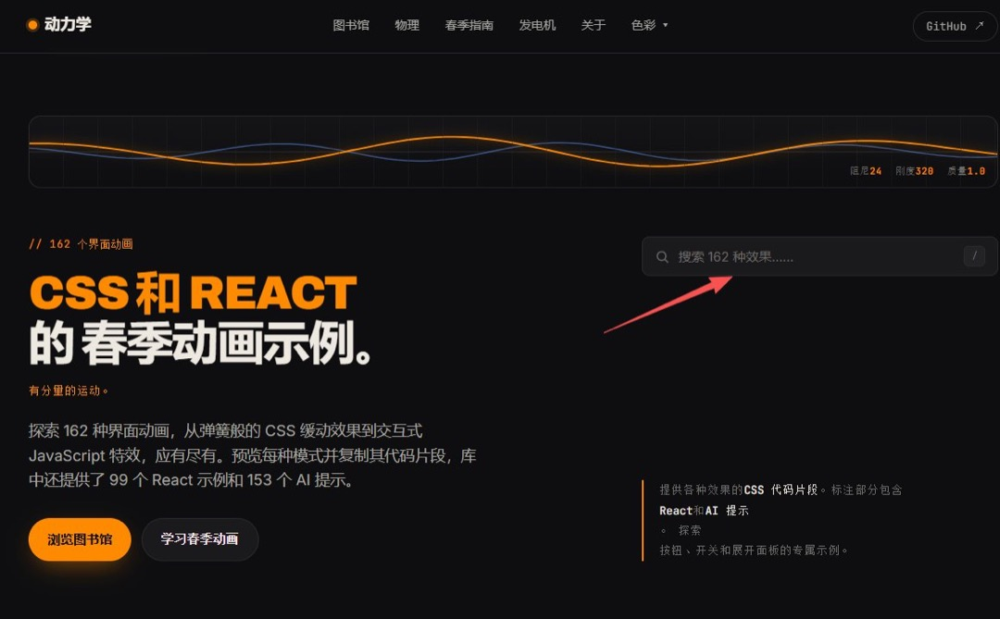

本期速览
01 AMD 发布 Helion AI 机架
02 Kinetics 动效库扩至 99 种
04 20 站三档 SEO 精力分配法
05 Story2Board 分镜角色一致性
01｜AMD 发布 Helion AI 机架
来源（X） · @TIME · 2026-10-16 09:07
中文译文
在OCP Summit上，AMD CEO Lisa Su发布了AMD Helion Agentic AI Rack，这是对AI代理崛起和传统CPU需求增长的回应。我们详细解析了该系统如何允许企业客户通过GPU和CPU的组合来定制机架。
原文
At the OCP Summit, AMD CEO Lisa Su announced the AMD Helion Agentic AI Rack, a response to the rise of AI agents and growing demand for traditional CPUs. We break down how the system allows enterprise clients to customize racks with combinations of GPUs and CPUs.
02｜Kinetics 动效库扩至 99 种
来源（X） · @bkdgiffug · 2026-10-20 03:58
版本给了两个，随你挑：
1️⃣ CSS + React，前端照着搬就完事
2️⃣ Prompt版，丢给AI编程助手让它自个儿写
懒得手搓动效的，赶紧收着。
🔗 https://kinetics.colorion.co

03｜GTM Agent 聚合 70 个数据源
来源（X） · @guikyoki · 2026-10-19 20:06
中文译文
GTM领域的OpenRouter。
一个密钥让你的代理获得每个GTM岗位所需的数据和工具：人员和公司数据、邮件和电话、SEO和AI搜索、社交聆听、广告和外呼。
来自20个数据供应商的70个工具。按次付费。可在Claude、ChatGPT或任何代理中运行。
原文
The OpenRouter for GTM.
One key gives your agent the data and tools for every GTM job: people and company data, emails and phones, SEO and AI search, social listening, ads and outbound.
70 tools from 20 data providers. Pay per call. Runs in Claude, ChatGPT or any agent.
04｜20 站三档 SEO 精力分配法
来源（X） · @ChainEpic · 2026-10-19 21:44
主力站（2-3个）：吃掉我 60% 精力。精做长尾词、布局高佣金 Affiliate 或自有产品，外链一点点死磕，我会主动发邮件寻求友链。有几篇行业内龙头的网站的 guest post就是这么换过来的，对我帮助很大
速成站（10个左右）：OpenSEO + Gemini 跑通内容，丢上去看 GSC 反应。
养权重/工具站（其余）：用来做交叉互链（注意别无脑环形互链，按相关性单向链接）
05｜Story2Board 分镜角色一致性
来源（X） · @FanShifu · 2026-10-19 18:37
用大模型做分镜，最让人头大的莫过于两件事：
1. 拿着剧本让 ChatGPT 跑九宫格分镜脚本，看着挺像那么回事，结果一镜换一张脸，三镜换掉整个剧组，人物一致性很难保证。
2. 想微调某一镜给男主来个特写，整个场景的美术风格立刻原地重开，改一张图等于毁掉一整条片子。
Story2Board 没有跟风去卷画质，而是把精力全砸在了影视工业最头疼的上下文连贯性和导演视听语言上。
一、把剧组固定资产锁进独立图层
它在项目里搭了一层 Consistency Layer（一致性锚点）。角色长相、穿搭、标志性道具和场景，全被固化成可复用的对象。后面不管是切全景、特写还是背影，AI 都基于同一套资产底座进行生成，告别「薛定谔的男主角」。
二、带脑子的 AI 副导演，而不是冰冷画图机器
很多人脑子里有故事，但不知道怎么切机位表达情绪。项目后台接入了 250 部影史经典里的 27 万个镜头标注数据。你用大白话描述剧情，它会像专业摄影指导一样反推景别、轴线、仰俯角度以及运镜方式，主动推荐：「这句对白建议用过肩镜头，下一秒再推近景烘托情绪」，把专业运镜逻辑拆解成能挑的选项，顺便帮你把为什么这么运镜的情绪动机讲清楚。真正的边干边学，大幅降低非科班导演的专业视听门槛。
三、打工人最爱的交付形态：带场记数据的 PDF
聊完改完，一键导出的不是一堆散装网图，而是可以打印出来发给摄影师、灯光师的 PDF 分镜表（景别、角度、运镜动作、台词全对齐，且导出功能本身不消耗任何点数）。
更有意思的是它的商业模式和技术实现：
模型调用做成了按需调用，免费层用便宜模型给用户试水，正式交付才调动 Nano Banana Pro / 2，兼顾 4K 细节与快速预览成本。收费上没有搞订阅制的套路，直接按「1 美元 = 100 点」明码标价，纯按需充值，点数永不过期。
我觉得它最大的价值是，允许创作者跳过规整的剧本撰写阶段，拿着零散的想法、分场大纲甚至 TikTok 下载来的短视频前两秒吸睛脚本，就能进行画面推演，上手路径更短平快。
不过也存在一些问题，比如放弃订阅制，确实降低了尝鲜用户的付费门槛，但同时也牺牲了 LTV 和营收可预测性，在商业模式上是减分的。
按需充值意味着只要用户完成了手头的提案或短视频拍摄，就可能陷入长达数月的沉寂期。相较于成熟 SaaS 稳定的 MRR ，这种付费模式对产品获客能力提出了更高要求，一旦推广获客成本上升，回本周期就会被无限拉长。
这可能也是新项目的无奈之举吧！